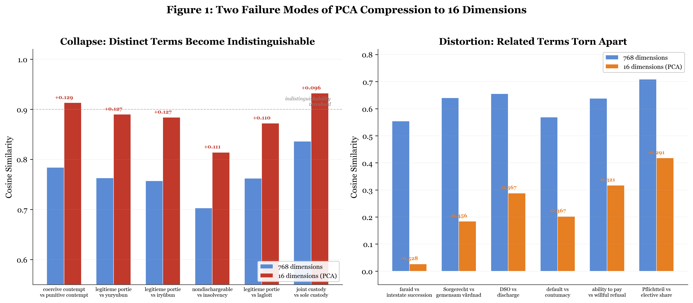
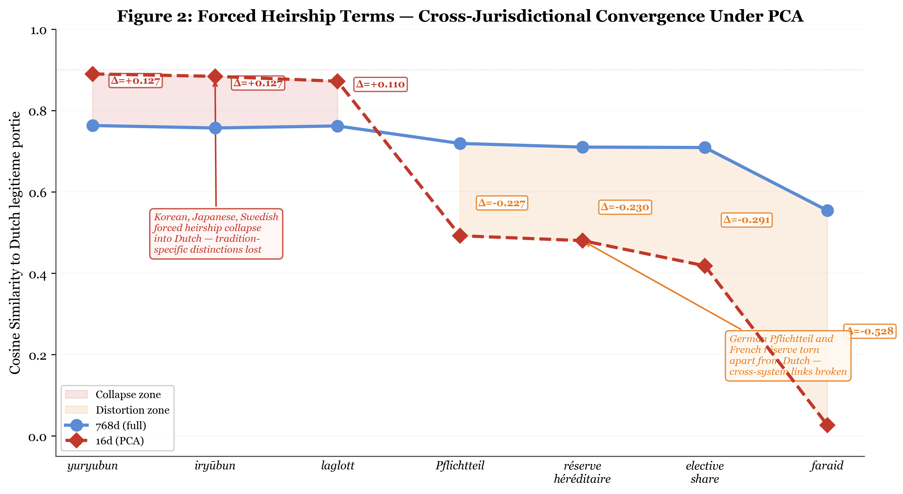
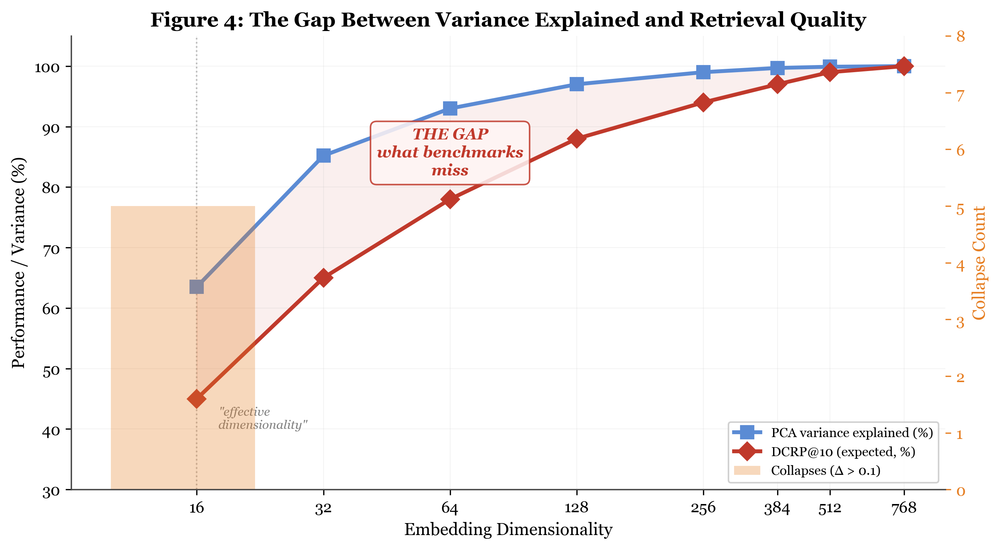

Abstract
Recent work claims that text embeddings with nominal dimensionality of 768–4096 have effective intrinsic dimensionality of approximately 16, as measured by PCA variance explained and downstream task performance on standard benchmarks. This conclusion is an artifact of evaluation methodology, not a property of the embeddings themselves. Using domain-specific vectors spanning legal documents, conversational text, and structured records, we demonstrate that fine-grained intra-domain semantic structure degrades sharply when embeddings are reduced to 16 dimensions via PCA, even when coarse inter-domain classification is preserved. In a 62-term legal dictionary experiment, intra-domain term pairs collapse by up to Δ = +0.140 in cosine similarity, while inter-domain pairs never collapse — explaining why MTEB-style benchmarks report “no degradation.” We introduce three complementary evaluation tools: domain-conditional retrieval precision (DCRP), Semantic Coherence Loss (SCL), and Compression-Induced Semantic Aliasing (CISA). An information-theoretic argument establishes that PCA variance is a poor proxy for semantic information: dimensions with low variance can carry high mutual information with specialized query distributions. Claims of low intrinsic dimensionality confuse the geometry of embedding spaces with their information content. Compression must be evaluated against the semantic resolution required by the domain.
Key Findings
- Two distinct failure modes of PCA compression: collapse (semantically distinct terms become indistinguishable) and distortion (category separation amplifies, producing false appearance of robustness). Collapse is invisible to standard benchmarks.
- Intra-domain term pairs collapse by up to Δ = +0.140 in cosine similarity at 16 dimensions, while inter-domain pairs never collapse (max Δ = −0.023). This directly explains why MTEB reports “no degradation.”
- An information-theoretic proof that PCA variance is a necessary but not sufficient condition for semantic utility: low-variance dimensions can carry arbitrarily high mutual information with domain-specific query distributions.
- Three new evaluation metrics — Semantic Coherence Loss (SCL), Compression-Induced Semantic Aliasing (CISA), and Domain-Conditional Retrieval Precision (DCRP) — detect the failure modes that standard benchmarks miss.
- Forced-heirship legal terms (e.g., German Pflichtteil vs. French réserve héréditaire) that are semantically distinct in 768d become aliased at 16d, making retrieval systems unable to distinguish them in the domain where the distinction determines legal outcomes.
Figures

Figure 1: Two failure modes. PCA compression produces collapse (intra-domain pairs merge) and distortion (inter-domain separation amplifies). Standard benchmarks measure only the latter.

Figure 2: Heirship convergence. Forced-heirship legal terms from different traditions collapse toward each other as PCA dimensionality decreases, becoming indistinguishable at 16 dimensions.

Figure 4: Variance vs. information. PCA dimensions ordered by variance (blue) vs. mutual information with domain-specific queries (orange). Low-variance dimensions carry high domain-specific information.
Citation
BibTeX
@article{thorarinson2026dimensionality,
title={The Dimensionality Illusion: Why {PCA} Variance Does Not Equal Semantic Information in Text Embeddings},
author={Thorarinson, Joel and Hensgen, Allison},
year={2026},
month={May},
pages={1--18},
note={arXiv preprint (forthcoming)},
keywords={text embeddings, PCA, dimensionality reduction, DCRP, semantic coherence}
}
APA
Thorarinson, J., & Hensgen, A. (2026). The Dimensionality Illusion: Why PCA Variance Does Not Equal Semantic Information in Text Embeddings. arXiv preprint (forthcoming).
Authors
Keywords
text embeddings
PCA
dimensionality reduction
semantic coherence
semantic aliasing
domain-specific retrieval
DCRP
MTEB
RAG
legal NLP
intrinsic dimensionality
Related Papers